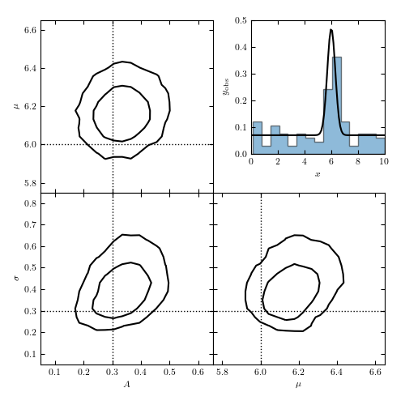

Finding a signal in a background¶

[ 0% ]
[ 0% ] 100 of 25000 complete
[ 1% ] 200 of 25000 complete
[ 1% ] 300 of 25000 complete
[* 2% ] 400 of 25000 complete
[* 2% ] 500 of 25000 complete
[* 2% ] 600 of 25000 complete
[* 3% ] 700 of 25000 complete
[* 3% ] 800 of 25000 complete
[** 4% ] 900 of 25000 complete
[** 4% ] 1000 of 25000 complete
[** 4% ] 1100 of 25000 complete
[** 5% ] 1200 of 25000 complete
[** 5% ] 1300 of 25000 complete
[** 6% ] 1400 of 25000 complete
[** 6% ] 1500 of 25000 complete
[** 6% ] 1600 of 25000 complete
[*** 7% ] 1700 of 25000 complete
[*** 7% ] 1800 of 25000 complete
[*** 8% ] 1900 of 25000 complete
[*** 8% ] 2000 of 25000 complete
[*** 8% ] 2100 of 25000 complete
[*** 9% ] 2200 of 25000 complete
[*** 9% ] 2300 of 25000 complete
[**** 10% ] 2400 of 25000 complete
[**** 10% ] 2500 of 25000 complete
[**** 10% ] 2600 of 25000 complete
[**** 11% ] 2700 of 25000 complete
[**** 11% ] 2800 of 25000 complete
[***** 12% ] 2900 of 25000 complete
[***** 12% ] 3000 of 25000 complete
[***** 12% ] 3100 of 25000 complete
[***** 13% ] 3200 of 25000 complete
[***** 13% ] 3300 of 25000 complete
[***** 14% ] 3400 of 25000 complete
[***** 14% ] 3500 of 25000 complete
[***** 14% ] 3600 of 25000 complete
[****** 15% ] 3700 of 25000 complete
[****** 15% ] 3800 of 25000 complete
[****** 16% ] 3900 of 25000 complete
[****** 16% ] 4000 of 25000 complete
[****** 16% ] 4100 of 25000 complete
[****** 17% ] 4200 of 25000 complete
[****** 17% ] 4300 of 25000 complete
[******* 18% ] 4400 of 25000 complete
[******* 18% ] 4500 of 25000 complete
[******* 18% ] 4600 of 25000 complete
[******* 19% ] 4700 of 25000 complete
[******* 19% ] 4800 of 25000 complete
[******** 20% ] 4900 of 25000 complete
[******** 20% ] 5000 of 25000 complete
[******** 20% ] 5100 of 25000 complete
[******** 21% ] 5200 of 25000 complete
[******** 21% ] 5300 of 25000 complete
[******** 22% ] 5400 of 25000 complete
[******** 22% ] 5500 of 25000 complete
[******** 22% ] 5600 of 25000 complete
[********* 23% ] 5700 of 25000 complete
[********* 23% ] 5800 of 25000 complete
[********* 24% ] 5900 of 25000 complete
[********* 24% ] 6000 of 25000 complete
[********* 24% ] 6100 of 25000 complete
[********** 25% ] 6200 of 25000 complete
[********** 25% ] 6300 of 25000 complete
[********** 26% ] 6400 of 25000 complete
[********** 26% ] 6500 of 25000 complete
[********** 26% ] 6600 of 25000 complete
[********** 27% ] 6700 of 25000 complete
[********** 27% ] 6800 of 25000 complete
[*********** 28% ] 6900 of 25000 complete
[*********** 28% ] 7000 of 25000 complete
[*********** 28% ] 7100 of 25000 complete
[*********** 29% ] 7200 of 25000 complete
[*********** 29% ] 7300 of 25000 complete
[*********** 30% ] 7400 of 25000 complete
[*********** 30% ] 7500 of 25000 complete
[*********** 30% ] 7600 of 25000 complete
[************ 31% ] 7700 of 25000 complete
[************ 31% ] 7800 of 25000 complete
[************ 32% ] 7900 of 25000 complete
[************ 32% ] 8000 of 25000 complete
[************ 32% ] 8100 of 25000 complete
[************* 33% ] 8200 of 25000 complete
[************* 33% ] 8300 of 25000 complete
[************* 34% ] 8400 of 25000 complete
[************* 34% ] 8500 of 25000 complete
[************* 34% ] 8600 of 25000 complete
[************* 35% ] 8700 of 25000 complete
[************* 35% ] 8800 of 25000 complete
[************** 36% ] 8900 of 25000 complete
[************** 36% ] 9000 of 25000 complete
[************** 36% ] 9100 of 25000 complete
[************** 37% ] 9200 of 25000 complete
[************** 37% ] 9300 of 25000 complete
[************** 38% ] 9400 of 25000 complete
[************** 38% ] 9500 of 25000 complete
[************** 38% ] 9600 of 25000 complete
[*************** 39% ] 9700 of 25000 complete
[*************** 39% ] 9800 of 25000 complete
[*************** 40% ] 9900 of 25000 complete
[*************** 40% ] 10000 of 25000 complete
[*************** 40% ] 10100 of 25000 complete
[**************** 41% ] 10200 of 25000 complete
[**************** 41% ] 10300 of 25000 complete
[**************** 42% ] 10400 of 25000 complete
[**************** 42% ] 10500 of 25000 complete
[**************** 42% ] 10600 of 25000 complete
[**************** 43% ] 10700 of 25000 complete
[**************** 43% ] 10800 of 25000 complete
[*****************44% ] 10900 of 25000 complete
[*****************44% ] 11000 of 25000 complete
[*****************44% ] 11100 of 25000 complete
[*****************45% ] 11200 of 25000 complete
[*****************45% ] 11300 of 25000 complete
[*****************46% ] 11400 of 25000 complete
[*****************46% ] 11500 of 25000 complete
[*****************46% ] 11600 of 25000 complete
[*****************47% ] 11700 of 25000 complete
[*****************47% ] 11800 of 25000 complete
[*****************48% ] 11900 of 25000 complete
[*****************48% ] 12000 of 25000 complete
[*****************48% ] 12100 of 25000 complete
[*****************49% ] 12200 of 25000 complete
[*****************49% ] 12300 of 25000 complete
[*****************50% ] 12400 of 25000 complete
[*****************50% ] 12500 of 25000 complete
[*****************50% ] 12600 of 25000 complete
[*****************51% ] 12700 of 25000 complete
[*****************51% ] 12800 of 25000 complete
[*****************52% ] 12900 of 25000 complete
[*****************52% ] 13000 of 25000 complete
[*****************52% ] 13100 of 25000 complete
[*****************53% ] 13200 of 25000 complete
[*****************53% ] 13300 of 25000 complete
[*****************54%* ] 13400 of 25000 complete
[*****************54%* ] 13500 of 25000 complete
[*****************54%* ] 13600 of 25000 complete
[*****************55%* ] 13700 of 25000 complete
[*****************55%* ] 13800 of 25000 complete
[*****************56%* ] 13900 of 25000 complete
[*****************56%* ] 14000 of 25000 complete
[*****************56%* ] 14100 of 25000 complete
[*****************57%** ] 14200 of 25000 complete
[*****************57%** ] 14300 of 25000 complete
[*****************58%** ] 14400 of 25000 complete
[*****************58%** ] 14500 of 25000 complete
[*****************58%** ] 14600 of 25000 complete
[*****************59%** ] 14700 of 25000 complete
[*****************59%** ] 14800 of 25000 complete
[*****************60%*** ] 14900 of 25000 complete
[*****************60%*** ] 15000 of 25000 complete
[*****************60%*** ] 15100 of 25000 complete
[*****************61%*** ] 15200 of 25000 complete
[*****************61%*** ] 15300 of 25000 complete
[*****************62%**** ] 15400 of 25000 complete
[*****************62%**** ] 15500 of 25000 complete
[*****************62%**** ] 15600 of 25000 complete
[*****************63%**** ] 15700 of 25000 complete
[*****************63%**** ] 15800 of 25000 complete
[*****************64%**** ] 15900 of 25000 complete
[*****************64%**** ] 16000 of 25000 complete
[*****************64%**** ] 16100 of 25000 complete
[*****************65%***** ] 16200 of 25000 complete
[*****************65%***** ] 16300 of 25000 complete
[*****************66%***** ] 16400 of 25000 complete
[*****************66%***** ] 16500 of 25000 complete
[*****************66%***** ] 16600 of 25000 complete
[*****************67%***** ] 16700 of 25000 complete
[*****************67%***** ] 16800 of 25000 complete
[*****************68%****** ] 16900 of 25000 complete
[*****************68%****** ] 17000 of 25000 complete
[*****************68%****** ] 17100 of 25000 complete
[*****************69%****** ] 17200 of 25000 complete
[*****************69%****** ] 17300 of 25000 complete
[*****************70%******* ] 17400 of 25000 complete
[*****************70%******* ] 17500 of 25000 complete
[*****************70%******* ] 17600 of 25000 complete
[*****************71%******* ] 17700 of 25000 complete
[*****************71%******* ] 17800 of 25000 complete
[*****************72%******* ] 17900 of 25000 complete
[*****************72%******* ] 18000 of 25000 complete
[*****************72%******* ] 18100 of 25000 complete
[*****************73%******** ] 18200 of 25000 complete
[*****************73%******** ] 18300 of 25000 complete
[*****************74%******** ] 18400 of 25000 complete
[*****************74%******** ] 18500 of 25000 complete
[*****************74%******** ] 18600 of 25000 complete
[*****************75%********* ] 18700 of 25000 complete
[*****************75%********* ] 18800 of 25000 complete
[*****************76%********* ] 18900 of 25000 complete
[*****************76%********* ] 19000 of 25000 complete
[*****************76%********* ] 19100 of 25000 complete
[*****************77%********* ] 19200 of 25000 complete
[*****************77%********* ] 19300 of 25000 complete
[*****************78%********** ] 19400 of 25000 complete
[*****************78%********** ] 19500 of 25000 complete
[*****************78%********** ] 19600 of 25000 complete
[*****************79%********** ] 19700 of 25000 complete
[*****************79%********** ] 19800 of 25000 complete
[*****************80%********** ] 19900 of 25000 complete
[*****************80%********** ] 20000 of 25000 complete
[*****************80%********** ] 20100 of 25000 complete
[*****************81%*********** ] 20200 of 25000 complete
[*****************81%*********** ] 20300 of 25000 complete
[*****************82%*********** ] 20400 of 25000 complete
[*****************82%*********** ] 20500 of 25000 complete
[*****************82%*********** ] 20600 of 25000 complete
[*****************83%************ ] 20700 of 25000 complete
[*****************83%************ ] 20800 of 25000 complete
[*****************84%************ ] 20900 of 25000 complete
[*****************84%************ ] 21000 of 25000 complete
[*****************84%************ ] 21100 of 25000 complete
[*****************85%************ ] 21200 of 25000 complete
[*****************85%************ ] 21300 of 25000 complete
[*****************86%************* ] 21400 of 25000 complete
[*****************86%************* ] 21500 of 25000 complete
[*****************86%************* ] 21600 of 25000 complete
[*****************87%************* ] 21700 of 25000 complete
[*****************87%************* ] 21800 of 25000 complete
[*****************88%************* ] 21900 of 25000 complete
[*****************88%************* ] 22000 of 25000 complete
[*****************88%************* ] 22100 of 25000 complete
[*****************89%************** ] 22200 of 25000 complete
[*****************89%************** ] 22300 of 25000 complete
[*****************90%************** ] 22400 of 25000 complete
[*****************90%************** ] 22500 of 25000 complete
[*****************90%************** ] 22600 of 25000 complete
[*****************91%*************** ] 22700 of 25000 complete
[*****************91%*************** ] 22800 of 25000 complete
[*****************92%*************** ] 22900 of 25000 complete
[*****************92%*************** ] 23000 of 25000 complete
[*****************92%*************** ] 23100 of 25000 complete
[*****************93%*************** ] 23200 of 25000 complete
[*****************93%*************** ] 23300 of 25000 complete
[*****************94%**************** ] 23400 of 25000 complete
[*****************94%**************** ] 23500 of 25000 complete
[*****************94%**************** ] 23600 of 25000 complete
[*****************95%**************** ] 23700 of 25000 complete
[*****************95%**************** ] 23800 of 25000 complete
[*****************96%**************** ] 23900 of 25000 complete
[*****************96%**************** ] 24000 of 25000 complete
[*****************96%**************** ] 24100 of 25000 complete
[*****************97%***************** ] 24200 of 25000 complete
[*****************97%***************** ] 24300 of 25000 complete
[*****************98%***************** ] 24400 of 25000 complete
[*****************98%***************** ] 24500 of 25000 complete
[*****************98%***************** ] 24600 of 25000 complete
[*****************99%******************] 24700 of 25000 complete
[*****************99%******************] 24800 of 25000 complete
[****************100%******************] 24900 of 25000 complete
[****************100%******************] 25000 of 25000 complete
# Author: Jake VanderPlas <vanderplas@astro.washington.edu>
# License: BSD
# The figure produced by this code is published in the textbook
# "Statistics, Data Mining, and Machine Learning in Astronomy" (2013)
# For more information, see http://astroML.github.com
import numpy as np
from matplotlib import pyplot as plt
from scipy import stats
# Hack to fix import issue in older versions of pymc
import scipy
import scipy.misc
scipy.derivative = scipy.misc.derivative
import pymc
from astroML.plotting import plot_mcmc
#----------------------------------------------------------------------
# Set up dataset: gaussian signal in a uniform background
np.random.seed(0)
N = 100
A_true = 0.3
W_true = 10
x0_true = 6
sigma_true = 0.3
signal = stats.norm(x0_true, sigma_true)
background = stats.uniform(0, W_true)
x = np.random.random(N)
i_sig = x < A_true
i_bg = ~i_sig
x[i_sig] = signal.rvs(np.sum(i_sig))
x[i_bg] = background.rvs(np.sum(i_bg))
#----------------------------------------------------------------------
# Set up MCMC sampling
A = pymc.Uniform('A', 0, 1, value=0.5)
x0 = pymc.Uniform('x0', 0, 10, value=5)
log_sigma = pymc.Uniform('log_sigma', -5, 5, value=0)
@pymc.deterministic
def sigma(log_sigma=log_sigma):
return np.exp(log_sigma)
def sigbg_like(x, A, x0, sigma):
"""signal + background likelihood"""
return np.sum(np.log(A * np.exp(-0.5 * ((x - x0) / sigma) ** 2)
/ np.sqrt(2 * np.pi) / sigma
+ (1 - A) / W_true))
SigBG = pymc.stochastic_from_dist('sigbg',
logp=sigbg_like,
dtype=np.float, mv=True)
M = SigBG('M', A, x0, sigma, observed=True, value=x)
model = dict(M=M, A=A, x0=x0, log_sigma=log_sigma, sigma=sigma)
#----------------------------------------------------------------------
# Run the MCMC sampling
S = pymc.MCMC(model)
S.sample(iter=25000, burn=5000)
#------------------------------------------------------------
# Plot the results
fig = plt.figure(figsize=(8, 8))
ax_list = plot_mcmc([S.trace(s)[:] for s in ['A', 'x0', 'sigma']],
limits=[(0.05, 0.65), (5.75, 6.65), (0.05, 0.85)],
labels=['$A$', '$\mu$', r'$\sigma$'],
true_values=[A_true, x0_true, sigma_true],
fig=fig, colors='k', linewidths=2)
ax = plt.axes([0.6, 0.6, 0.35, 0.35])
x_pdf = np.linspace(0, 10, 100)
y_pdf = A_true * signal.pdf(x_pdf) + (1 - A_true) * background.pdf(x_pdf)
ax.hist(x, 15, normed=True, histtype='stepfilled', alpha=0.5)
ax.plot(x_pdf, y_pdf, '-k')
ax.set_xlim(0, 10)
ax.set_ylim(0, 0.5)
ax.set_xlabel('$x$')
ax.set_ylabel('$y_{obs}$')
plt.show()